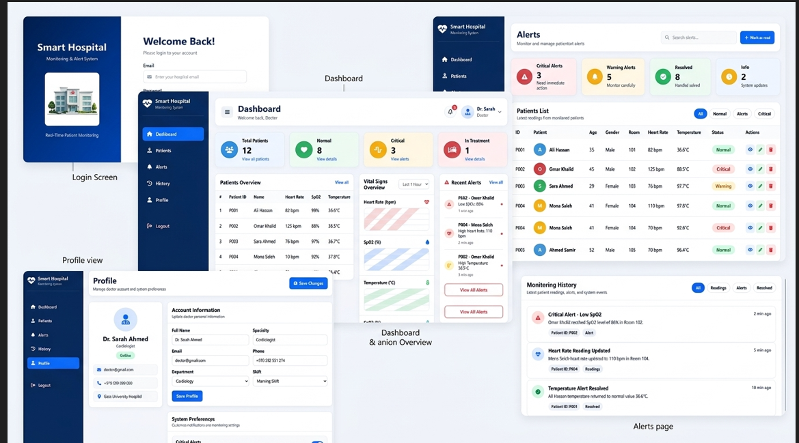
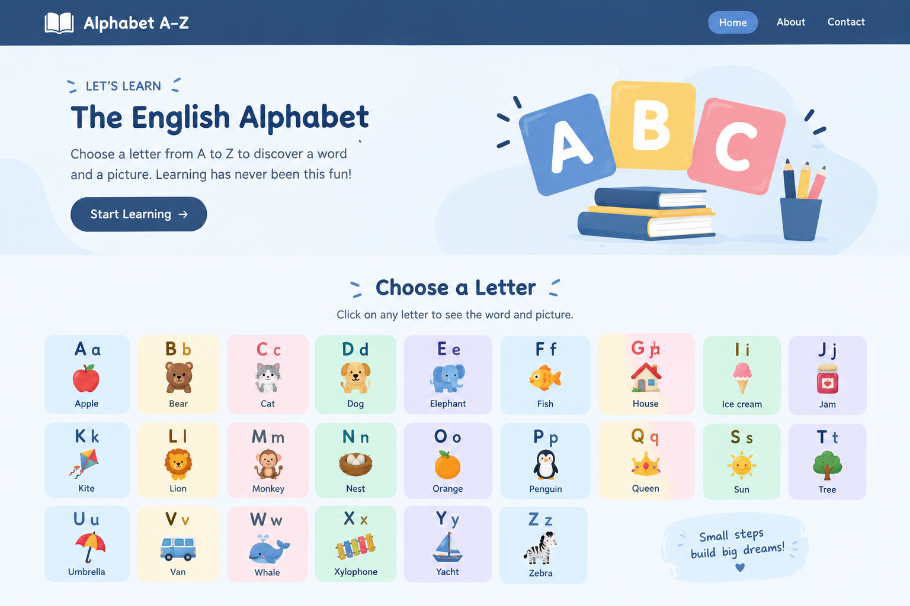
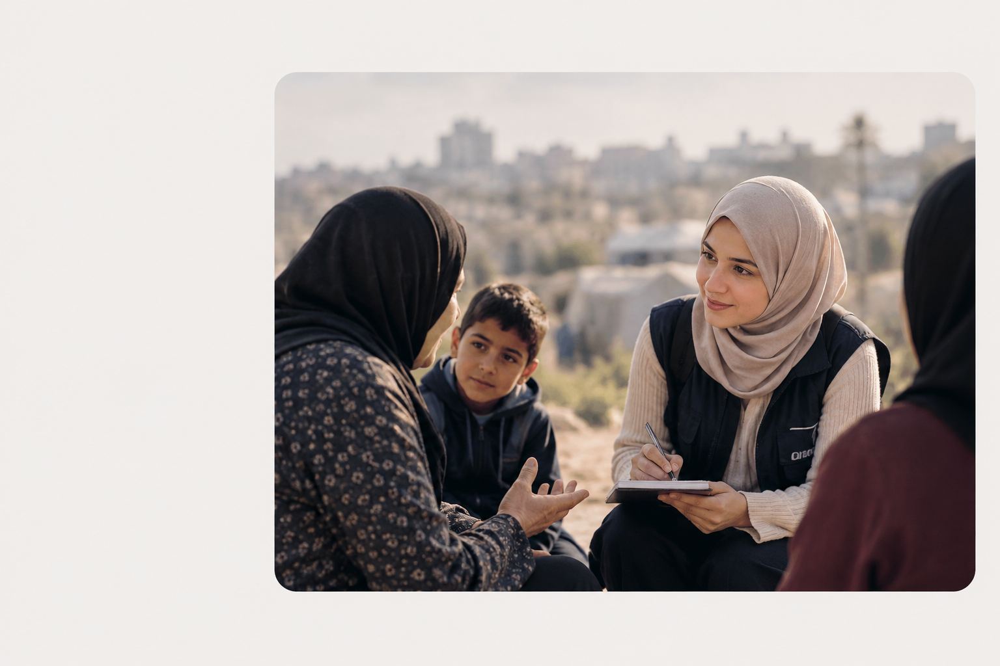

التعليم
بكالوريوس هندسة حاسوب
مرحبًا، أنا
خريجة هندسة حاسوب مهتمة بتطوير الويب وجمع البيانات والبحث الميداني والتواصل المجتمعي. أسعى إلى توظيف مهاراتي التقنية والرقمية لدعم المشاريع التي تخدم الناس وتلبي احتياجاتهم.
خلفية تقنية، وتجربة ميدانية، وشغف بالتعلم والتطوير.
أنا ميساء حمد، خريجة هندسة حاسوب من جامعة غزة بمعدل تراكمي 83.77%. لدي تجربة في البحث الميداني وجمع البيانات والتواصل المجتمعي، إلى جانب اهتمامي بتطوير الويب واستخدام الأدوات الرقمية.
أهتم بالتعلم المستمر، وتنظيم المعلومات بدقة، والتواصل باحترام مع أفراد المجتمع، واستخدام التكنولوجيا وأدوات الذكاء الاصطناعي كوسائل مساعدة في العمل والتعلم وحل المشكلات.
تواصلي معيبكالوريوس هندسة حاسوب
83.77%
قطاع غزة، فلسطين
التكنولوجيا والعمل الإنساني
مهارات تقنية وميدانية ورقمية أعمل على تطويرها باستمرار.
أساسيات تطوير واجهات الويب والعمل على المشاريع البرمجية.
جمع المعلومات وتنظيم السجلات والاهتمام بجودة البيانات وسريتها.
المشاركة في جمع البيانات الميدانية والتواصل المجتمعي والأنشطة التوعوية.
استخدام أدوات الذكاء الاصطناعي للمساعدة في البحث وتنظيم المعلومات والبرمجة والتصميم والتعلم.
مشاريع تقنية توضّح ما أتعلمه وأطبّقه عمليًا.

مشروع تخرج جامعي لتصميم نظام ويب لمراقبة معلومات المرضى والتنبيهات ضمن بيئة تجريبية تعليمية. يتضمن المشروع واجهات React وTypeScript، وأهدافًا للمصادقة وإدارة البيانات باستخدام Firebase، مع الاعتماد حاليًا على بيانات اصطناعية ومحاكيات محلية للاختبار والعرض.

موقع تعليمي تفاعلي يساعد المتعلمين على استكشاف الحروف الإنجليزية من A إلى Z. عند اختيار حرف، يمكن عرض كلمة وصورة مرتبطة به لدعم التعرّف إلى الحروف والمفردات بطريقة بصرية مبسطة.
تجارب ساهمت في تطوير مهاراتي الميدانية والتواصلية.
يوليو – أكتوبر 2026
المشاركة في أنشطة البحث وجمع البيانات الميدانية، والتواصل مع أفراد المجتمع، ودعم تنظيم المعلومات لأغراض المتابعة.
المساعدة في أنشطة لجنة المرأة والطفل، وجمع البيانات الأسرية، وتنظيم السجلات، والتواصل مع أفراد المجتمع.
المشاركة في أنشطة وندوات توعوية حول حقوق المرأة والعنف القائم على النوع الاجتماعي وموضوعات اجتماعية، إلى جانب المساهمة في المبادرات المجتمعية.
من خلال تجربتي الميدانية في غزة، تعلّمت أهمية الاستماع للناس، واحترام خصوصيتهم، والتعامل مع المعلومات بمسؤولية. أطمح إلى الجمع بين هذه القيم ومهاراتي التقنية للمساهمة في أعمال ذات أثر إيجابي.

التواصل • المسؤولية • الأثريسعدني التواصل بشأن فرص العمل والتعاون والمشاريع التي تجمع بين التقنية والعمل المجتمعي.